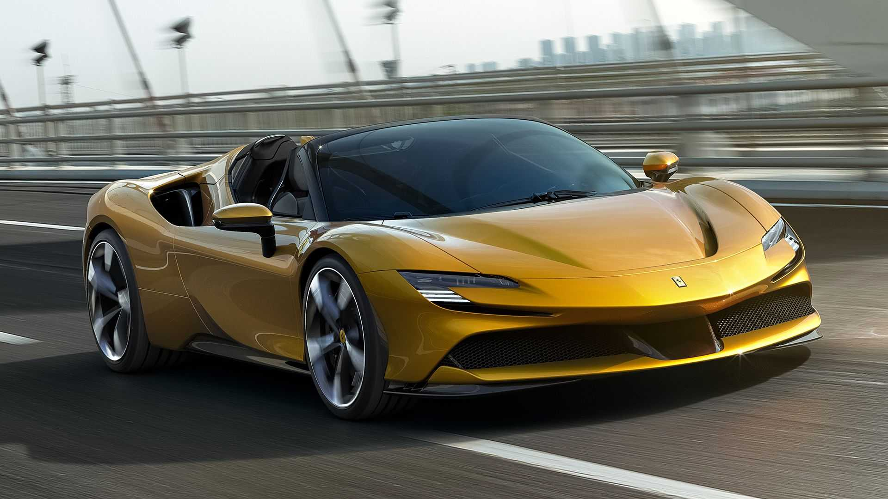

El SF90 Spider, el primer Spider PHEV de serie del Cavallino Rampante, se erige como referencia en términos de rendimiento e innovación tanto dentro de la gama Ferrari como dentro del sector de vehículos deportivos. El vehículo hereda la configuración extrema y el rendimiento récord del SF90 Stradale, logrando aumentar el placer de conducción y la usabilidad gracias a la última versión del techo rígido plegable RHT. El SF90 Spider es el automóvil ideal para todos aquellos que buscan al máximo nivel de tecnología sin sacrificar la versatilidad y la emoción de conducir a cielo abierto.
